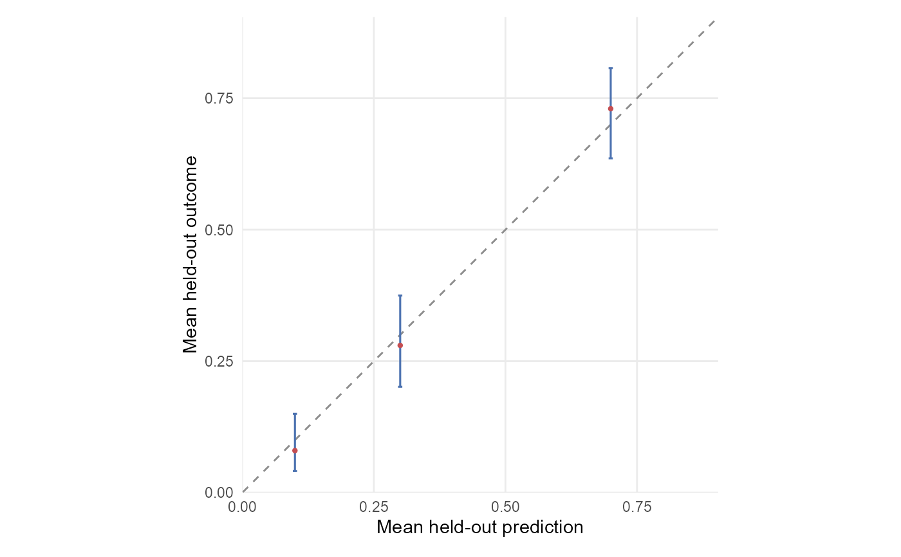

Builds publication-ready diagnostic plots from package result tables or their enclosing result lists.
Usage
csdg_plot_data(
x,
type,
title = NULL,
subtitle = NULL,
base_size = 11,
style = c("color", "monochrome"),
...
)Arguments
- x
A data frame or structured result returned by a CSDG diagnostic function.
- type
One of
"performance","calibration","pfi","importance_comparison","model_comparison","rank_heatmap","dependence","measurement_trajectory","setting_generalization","setting_penalty","subgroup","subgroup_contrast","local_fidelity","gate_status","explanation_sensitivity","ale","ice","interaction","ale_2d","multiplicity", or"decision_curve".- title, subtitle
Optional plot text.
- base_size
Base text size in points.
- style
Either
"color"for the default blue-red rendering or"monochrome"for an achromatic print-oriented rendering with redundant shapes and line types where categories must be distinguished.- ...
Type-specific options.
Common options are
x_label,y_label,feature_labels,direct_label_size,top_n,axis_text_size,axis_title_size,legend_text_size,legend_title_size, andstrip_text_size.performanceacceptslearner_labelsandinclude_zero. Point-and-interval panels use data-adaptive axes by default because a zero baseline is not required for positional encodings; setinclude_zero = TRUEwhen zero is substantively necessary.calibrationacceptsconfidence_level, uses fixed-size bin markers without a redundant bin-count legend, and computes Wilson score intervals only when the input contains valid binomial bin counts and no intervals.model_comparisonacceptsfold_scores,reference_learner,limit_label_size, andx_limits.importance_comparisonacceptsfeature_labels,learner_order, andtop_n. It plots mean importance in aligned learner panels and uses the supplied lower and upper endpoints as descriptive ranges rather than confidence intervals.dependenceacceptsfeature_labelsandtop_n.measurement_trajectoryacceptslearner_labels,outcome_order,x_label,y_label, andinclude_zero.setting_generalizationacceptsmeasure.setting_penaltyacceptsx_labelandy_label.rank_heatmapacceptslearner_order.subgroupandsubgroup_contrastrequiremetricand acceptaudit_labelsandsubgroup_labels.subgroupalso acceptssubgroup_orderandx_limits;subgroup_contrastacceptscaption. Direct labels forpfiandsubgroupare placed inside the available horizontal scale.gate_statusacceptsgate_order,group_order,group_labels, andcell_label_size. Multi-group inputs must provide one status for every group-by-gate combination.explanation_sensitivityacceptslearner_labels,group_order,group_labels,group_colors,x_limits,y_limits,caption, anddisplay. Setdisplay = "aligned"for an aligned dot display, ordisplay = "diverging"for opposing bars of performance-tolerance consumption and PFI pair-order reversals on a common proportion scale. Both displays also acceptreference_learner(the learner with which the others are compared),include_focal(whether to show the reference learner itself; defaultTRUE), andlearner_order; the diverging display acceptsbar_widthbetween 0.05 and 0.9. In the color style, group colors may be named by original group IDs or by uniquely mapped group labels. The monochrome style uses black shapes instead.aledraws a pointwise uncertainty ribbon when the input contains bothale_lowerandale_upper. Interval semantics must be supplied by the source table and should be stated in the figure caption.iceacceptsy_limits,y_scale, andy_breaks, and identifies the pointwise 5th-95th percentile band, 25th-75th percentile band, and median across ICE curves in a legend. Sety_scale = "logit"for probability predictions that would otherwise be compressed near zero or one. Supplied limits must contain every pointwise 5th-95th percentile band.interactionacceptsx_limits; by default, its horizontal axis is restricted to the displayed statistics while retaining the bounded-statistic definition in the axis title.multiplicitydraws a stepwise cumulative summary from fixed-width aggregate bins. It accepts an optional aggregatequantilestable and directly labels its exact p50, p90, and p95 values on the plotted path.
Value
A ggplot2::ggplot object.
Details
csdg_plot_data() is the table-oriented complement to csdg_plot().
It is intended for analyses that combine or relabel package outputs before plotting while preserving the package's
visual system and diagnostic semantics.
Examples
calibration = data.frame(
predicted = c(0.1, 0.3, 0.7),
observed = c(0.08, 0.28, 0.73),
n = c(100L, 100L, 100L)
)
csdg_plot_data(calibration, type = "calibration")
